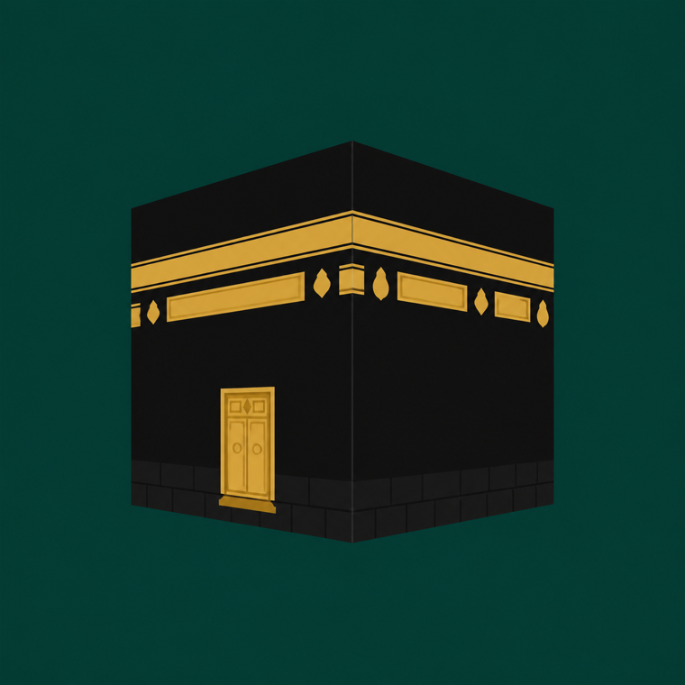
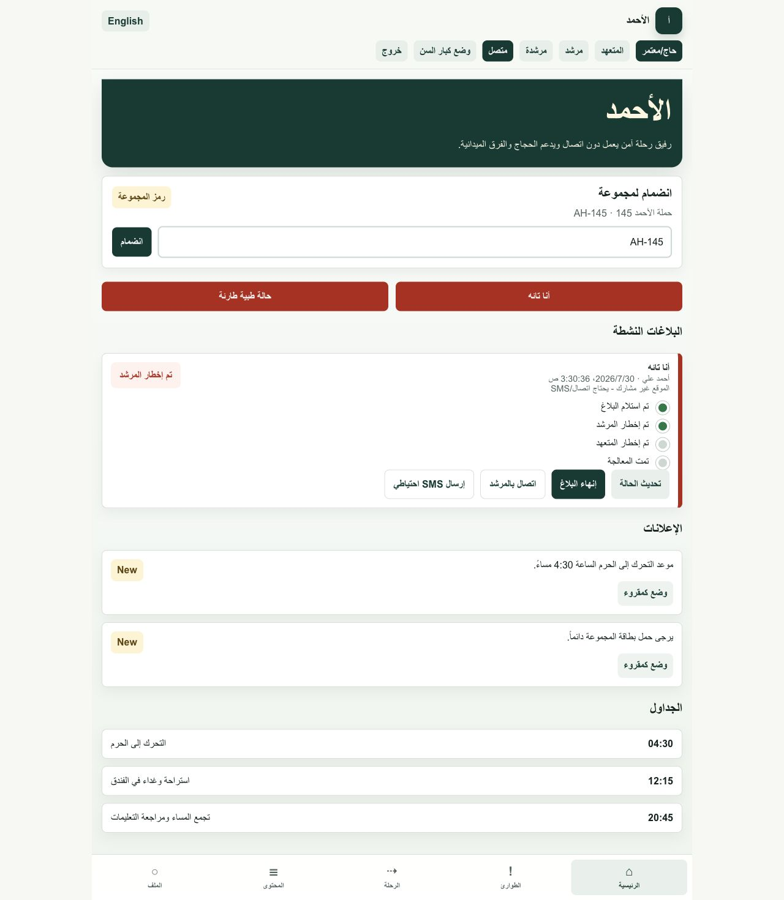
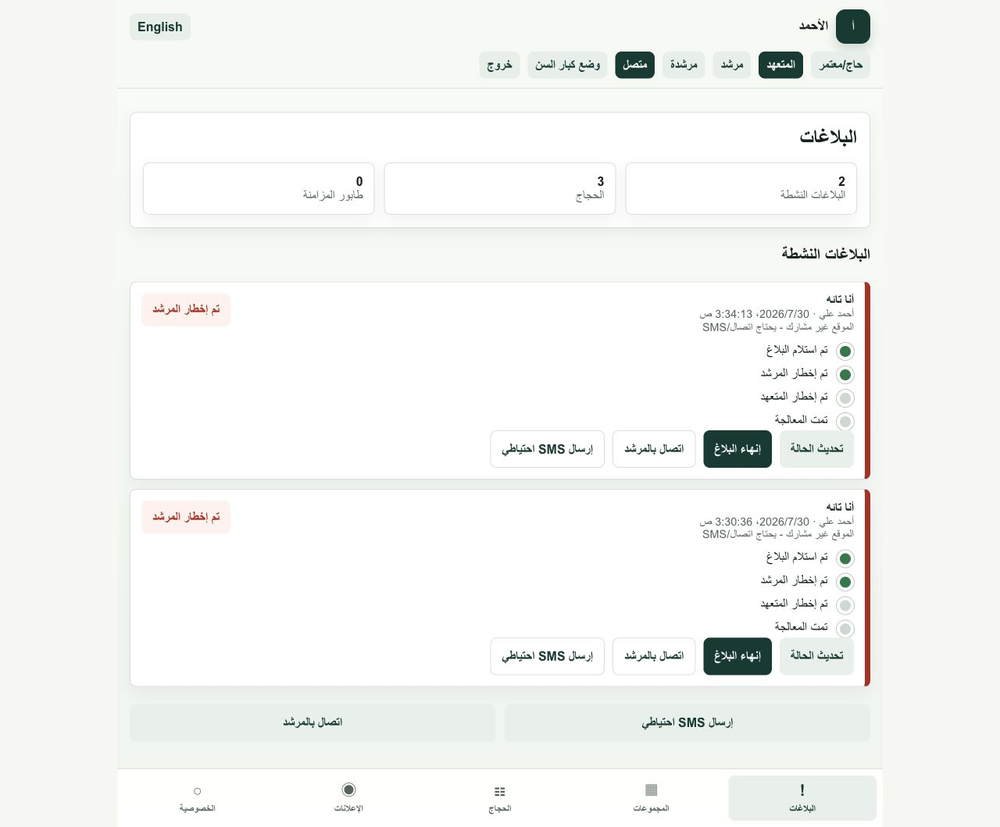

منصة عراقية لإدارة حملات الحج والعمرة
تطبيق الأحمد
إدارة موحّدة تربط مديرة المنصة بالمتعهدين والمرشدين والحجاج، وتحوّل طلبات التوهان والحالات الصحية إلى استجابة سريعة بموقع ومسار واضح.
لماذا الأحمد؟
كل رحلة تستحق إدارة أوضح واستجابة أسرع.
صُممت المنصة حول اللحظات التي تحتاج قراراً سريعاً: معرفة من يحتاج المساعدة، أين يوجد، ومن يستطيع الوصول إليه، من دون إرباك أو خطوات طويلة.
منظومة متكاملة
من الإدارة اليومية إلى لحظة الطوارئ
دخول حسب الدور
اسم مستخدم وكلمة مرور يفتحان تلقائياً الواجهة والصلاحيات المناسبة.
تنبيه لا يُفوّت
إشعار عاجل للحالات المهمة مع صوت مستمر حتى تحديث حالة الطلب.
اتجاهات واضحة
فتح مسار مباشر عبر خرائط Google من موقع المستجيب إلى موقع الحاج.
معلومات صحية
العمر والجنس والأمراض والأدوية ورقم الهاتف ضمن ملف الحاج عند الحاجة.
على الهاتف مباشرة
واجهة عربية متجاوبة تعمل بسلاسة على أجهزة iPhone وAndroid.
إدارة مركزية
الحسابات والحملات والطلبات في مكان واحد يسهّل المتابعة واتخاذ القرار.
واجهة لكل مسؤولية
أربع تجارب، منصة واحدة
تحدد الإدارة اسم المستخدم وكلمة المرور والدور. بعد تسجيل الدخول يرى كل شخص ما يحتاجه فقط.
مديرة المنصة
تنشئ الحسابات والحملات، تحدد الأدوار، وتعدّل جميع البيانات من مركز تحكم واحد.
المتعهد
يتابع الحجاج والحالات العاجلة، ويشاهد موقع كل حاج والمسار الأسرع للوصول إليه.
المرشدون
يستلمون التنبيهات فوراً ويتحركون باتجاه الحاج مع تفاصيل الحالة والموقع.
الحاج
يصل إلى واجهة بسيطة مخصصة له لطلب المساعدة عند التوهان أو العارض الصحي.
استجابة عاجلة
من نداء الحاج إلى الوصول إليه، بخط واضح.
لا يكتفي التطبيق بعرض نقطة على الخريطة. يرسل الحالة، يثبت موقع الحاج، ينبّه فريق الحملة، ويفتح الاتجاهات للوصول بأسرع وقت ممكن.
الصوت يبقى مستمراًحتى يستلم الفريق الطلب ويحدّث حالته داخل المنصة.
- 01
إرسال الطلب
الحاج يحدد: أنا تائه أو لدي حالة صحية.
- 02
تثبيت الموقع
المنصة تحفظ موقع الحاج الحالي مع بياناته.
- 03
تنبيه الفريق
المتعهد والمرشدون يستلمون تنبيهاً عاجلاً.
- 04
الوصول والتحديث
يُفتح المسار المباشر ثم تُحدّث حالة الطلب.
مصمم للميدان
واضح للحاج. عملي لفريق الحملة.
لغة عربية مباشرة، إجراءات كبيرة وواضحة، ومعلومات الحالة أمام الشخص المسؤول لحظة وصول التنبيه.


واجهة التطبيق
استكشف تطبيق الأحمد
امسح الرمز لفتح الموقع الرسمي، أو شاهد واجهات التطبيق مباشرة.
شاهد الواجهاتفكرة وتطوير
نور مهند أحمد
خريجة الأمن السيبراني - جامعة بابل
باحثة في الذكاء الاصطناعي والأمن السيبراني | عضوة IEEE | مُراجِعة علمية ضمن اللجان الفنية للبرامج (TPC)
مؤلفة منشورة لدى IEEE | سفيرة IEEE Region 8 Entrepreneurship Week 2026 - العراق | سفيرة IEEE WIE - العراق